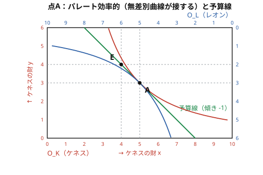
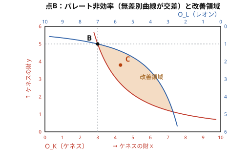

ミクロ経済学 練習問題集
本問題集は教材『ミクロ経済学』（以下では「教科書」と呼ぶ）に対応した練習問題集である．各章は教材の対応する章と同じ順序で並んでいる．問題には「答えを表示」ボタンで解答例を確認できる．
意思決定
需要と供給
社会の状態は$x_1,\dots,x_K$だけあるとする．また登場人物が$N$人いて，そのうちの一人を$i$とするとき，彼が状態 $x_k$から得られる効用は$u_i(x_k)$と書く．$x_1$がパレート効率的であるとするとき，$x_1$を最良にするような社会厚生関数を一つ考えなさい．
家の取引モデルを考える．あるマッチングでの取引がパレート効率的であることと，マッチングを破壊するような裏取引ができないということは同じことを言っているだろうか？ただしこの場合の裏取引ではお金のやり取りもできることとする．
同じではない．例えば，市場均衡と同じマッチングであるが，天照とヨセフがマッチする天照が850万円で家を購入している．一方で出雲とヤコブがマッチングするが，出雲は3500万円で家を購入している．高木とルツは価格はなんでも良いがマッチングしている．このとき，このマッチングはパレート効率的である．しかし，ヨセフと出雲が得ている効用は0なので，彼らが取引をすることでマッチングを破壊できる．
このタイプでの市場での取引についての一般的な議論はShapley and Shubik (1971) "The assignment game I: The core", International Journal of Game Theory, pp. 111--130 を参照のこと．
家の取引モデルを考える．ある買い手と売り手のマッチングでの取引がパレート効率的であることと，社会的総余剰を最大化することにはどのような関係があるだろうか？ただしお金をやり取りすることは可能であるとする．
家の取引モデルにおいて，あるマッチングにおける取引がパレート効率的であることと社会的総余剰を最大にすることは同じである．
あるマッチングAが社会的総余剰を最大にしていないとしてみよう．そうすると社会的総余剰を最大にするマッチングBがある．今，AからBに移動したしたとき，得する人は必ず存在する．全員損していれば社会的そう余剰が減ってしまって最大化することと矛盾するからである．今，ここで損をした人がいたとしよう．その損失の総額を$x$とする．一方で，得した人の得した分の総額を$y$とする．このとき，Bが社会的総余剰を最大にすることから$y>x$である．そうすると，得した人が損した人に損失額$x$を分け与えれば全員の効用を改善することができる．したがってマッチングAはパレート効率的ではない．
逆にマッチングAが社会的総余剰を最大にしているとする．このとき，別のマッチングに移行すると社会的総余剰は減少する．ということは誰かの効用が下がるということなのでマッチングAはパレート効率的である．
これは①お金のやり取りがそのまま効用に足し引きできる②お金のやり取りができるという二つの前提に依存していることに注意すること．
課税が存在する状況においては市場均衡での取引が「社会的総余剰を最大にしない・課税の死荷重損失が存在する」ということを示した．しかし，社会的総余剰には「足していいのか」と言う批判がつきまとう．そこで，パレート効率性による判断をしたい．家の取引モデルを用いて，課税下での市場均衡での取引がパレート効率的かどうか答えなさい．
家の取引モデルに従量税$t=1000$を課した市場均衡では，取引は2件（天照・ヨセフと出雲・ヤコブ）に減り，「高木（支払意思額$2000$）とルツ（費用$1800$）」の取引が消失する．本書ではこの失われた余剰$200$を死荷重損失と呼んだ．以下，社会的総余剰を持ち出さずに，誰の効用も下げずに少なくとも1人の効用を上げる再配分が存在することを示す．
課税下の市場均衡における各人の余剰は次の通り（買い手の支払う税込価格は$2400$，売り手の受け取る税抜き価格は$1400$）：天照$=5000-2400=2600$，出雲$=3500-2400=1100$，ヨセフ$=1400-850=550$，ヤコブ$=1400-950=450$，高木$=$ルツ$=0$，政府税収$=1000\times 2=2000$．
パレート改善の構成． 従量税を撤廃したうえで，現に取引していた4人（天照・出雲・ヨセフ・ヤコブ）から$500$ずつの一括税を徴収する政策を考える．課税撤廃後の市場では3件の取引が成立する．均衡価格を$1900$とすれば各人の余剰は次の通り：
- 天照$:5000-1900-500=2600$（変化なし）
- 出雲$:3500-1900-500=1100$（変化なし）
- ヨセフ$:1900-850-500=550$（変化なし）
- ヤコブ$:1900-950-500=450$（変化なし）
- 高木$:2000-1900=100$（$+100$）
- ルツ$:1900-1800=100$（$+100$）
- 政府税収$:500\times 4=2000$（変化なし）
このように，誰の効用も下げずに高木とルツの厚生を改善できる．したがって課税下の市場均衡はパレート効率的ではない．
言い換えれば，死荷重損失$200$は「税収を維持したまま課税方法を変えれば，誰の効用も下げずに皆で分け合える余地」を意味する．取引量に依存しない一括税（つまり取引量に依らず税金を徴収する）は消費者と生産者の価格を変えないので，同じ税収でも従量税より効率的である．（もっとも現実には所得や能力を観察できない一括税にはそれ自体の困難があり，これは最適課税論の中心的論点の一つである．）
市場の失敗
以下の会話を読み，Aさんの疑問に対して答えなさい．答えは複数ありうる．
学生A「先生，市場の効率性と外部性のところを読んで思ったことがあるんですけど」
教授B「はい，なんでしょうか？」
学生A「他人のことを思いやることって，他人の行動が自分の効用に入るので外部性になるじゃないですか？」
教授B「そうなりますね．」
学生A「でも外部性が入ると市場取引が非効率になるじゃないですか．ということは他人を思いやると市場が非効率になるってことですか？他人を思いやってはいけないのですか？」
解答例1：市場取引では自分の財の購入量を決定するだけなので取引そのものには変化がない．思いやりの分，自分自身の効用が増えるだけなので社会的総余剰の総量は大きくなるので良い．
解答例2：市場取引では自分の財の購入量を決定するだけなので取引そのものには変化がない．しかし思いやりが自分自身の効用と他者の効用を足して2で割ったものになる場合，他者の消費は自分でコントロールできない分だけ，不満が増える．この外部性によって社会的総余剰が小さくなるので良くない．
解答例3：市場取引では変化がないが，公共財の供給を考える場合，相手の効用が自分に入る分だけ，公共財の供給量が増える．公共財はもともと過小供給なので思いやりの分，公共財の供給量が増える．そのため思いやりを持つことで社会的総余剰は改善する．
市場の失敗においては市場均衡での取引が「社会的総余剰を最大にしない」ということを示した．しかし，社会的総余剰には「足していいのか」と言う批判がつきまとう．そこで，パレート効率性による判断をしたい．本書で紹介した市場の失敗が発生するような状況で，本書の例を用いて，市場均衡での取引がパレート効率的かどうか答えなさい．ただし，お金のやり取りは可能であるとする．
本書で扱った3つの市場の失敗（外部性・情報の非対称性・価格の支配）はいずれも市場均衡がパレート効率的ではない．以下，本書の数値例を用いて，現状の取引から出発して誰の効用も下げずに少なくとも1人の効用を上げる再配分が存在することを示す．
外部性（家の市場と音楽家ヴォルフ）：市場均衡では家が3軒建ち，成立するかどうかの境界線上の取引は「高木が支払意思額$2000$で買い，ルツが費用$1800$で売る」である．この取引による高木の余剰は$2000-2000=0$，ルツの余剰は$2000-1800=200$である．この1組の取引をやめれば，ヴォルフの騒音被害は$500$だけ減る．したがって，ヴォルフがルツに$200$を支払って取引を止めてもらえば，ルツとヴォルフ以外の参加者の余剰は変わらず，ルツは無差別，ヴォルフは$500-200=300$だけ厚生が改善する．これはパレート改善であり，市場均衡はパレート効率的ではない．
情報の非対称性（中古スマホ市場）：市場均衡では悪い中古スマホしか取引されず，良い中古スマホは取引されない．しかし良い中古スマホの売り手の評価は$3$万円，買い手の評価は$4$万円であるから，もしこの取引が成立すれば双方が厚生を改善できる．たとえば良い中古スマホを$3.5$万円で取引すれば，売り手は$+0.5$，買い手は$+0.5$の余剰を得て，他の参加者の余剰は変わらない．したがって市場均衡はパレート効率的ではない．（なお，買い手に品質が観察できないため，このパレート改善を実際の取引として実現する手段はない．制約のもとでなお改善の余地があるかという「制約付きパレート効率」の問題は別途考える必要がある．）
価格の支配（カルテル）：カルテル下では取引が2件に減り，「高木（支払意思額$2000$）とルツ（費用$1800$）」の取引が失われている．もしこの2人だけが裏で価格$1900$万円で取引すれば，高木は$2000-1900=100$，ルツは$1900-1800=100$の余剰を得る．他の取引（ヨセフ・ヤコブによる$3500$での販売）はそのまま維持できるので他の参加者の余剰には影響がない．これはパレート改善であり，市場均衡はパレート効率的ではない．（同時に，これはカルテルが内部から崩れる誘因が常に存在することも意味する．）
以上より，3つの市場の失敗いずれにおいても，総余剰の最大化を持ち出すまでもなく，市場均衡はパレート効率的でないと判定できる．
教科書の家の市場（音楽家ヴォルフが家1軒あたり500万円の騒音被害を受ける）を考えよう．市場の取引参加者とヴォルフの間で交渉が自由にできるとして，以下の二つの初期権利配分のもとで，どのような取引が成立するかを考えよう．
- ヴォルフが「家を建てさせない権利」を持つ場合：売り手は家を建てる前にヴォルフから許可を得る必要があり，許可の対価としてヴォルフに金銭を支払うことができる．
- 売り手が「自由に家を建てる権利」を持つ場合：ヴォルフは家を建てないように売り手や買い手に金銭を支払うことができる．
いずれの場合も，ある買い手と売り手のペアが取引を行うかどうかは，取引から生じる三者合計の余剰の正負で決まる．買い手の支払意思額を $v$，売り手の費用を $c$ とすると，1軒の取引から生じる余剰は買い手と売り手で $v-c$，これに対しヴォルフは $-500$ の被害を受けるので，三者合計の余剰は $v-c-500$ である．これが正であれば，三者は適切に金銭を移転することによって全員の効用を改善できる．逆に負であれば，どのような金銭移転を伴っても全員を満足させる取引は存在しない．
各ペアについて $v-c-500$ を計算すると次のようになる．
- 天照（$v=5000$）・ヨセフ（$c=850$）：$5000-850-500=3650>0$ → 取引成立
- 出雲（$v=3500$）・ヤコブ（$c=950$）：$3500-950-500=2050>0$ → 取引成立
- 高木（$v=2000$）・ルツ（$c=1800$）：$2000-1800-500=-300 < 0$ → 取引不成立
- これより支払意思額の低い買い手・費用の高い売り手のペアでは余剰はさらに小さくなり，いずれも取引不成立．
したがって，初期権利配分にかかわらず家は2軒建ち，買い手は天照・出雲，売り手はヨセフ・ヤコブとなる．取引から生じる余剰の合計は $3650+2050=5700$ 万円であり，これは社会的最適（騒音被害を含めた総余剰の最大値）と一致する．市場均衡では家が3軒建ち総余剰は $5400$ 万円であったから，交渉によって死荷重損失 $300$ 万円が解消されたことになる．
違いは余剰の分配のみである．(1)の場合は売り手・買い手はヴォルフに少なくとも $500$ 万円ずつ支払う必要があるため，ヴォルフは被害を完全に補償される（あるいはそれ以上を得る）．(2)の場合はヴォルフが高木・ルツのペアに $200$ 万円から $500$ 万円の範囲で対価を支払って取引を止めさせる．いずれも実現する取引は同じであり，効率性は権利配分に依存しない．これをコースの定理と呼ぶ．交渉に費用がかからないとき，外部性の問題は当事者間の交渉によって解決されうるのである．
教科書の中古スマホ市場（良品：売り手評価3万円・買い手評価4万円，不良品：売り手評価0.5万円・買い手評価0.6万円，両者が半々）を考えよう．売り手はスマホの品質を知っているが買い手は知らないため，市場には不良品しか流通せず，社会的総余剰は$1.1$から$0.1$へ低下するのであった．
この問題を緩和する一つの方法としてハード・インフォメーション，すなわち偽造不可能な証拠の提示を考える．良品を持つ売り手だけがその証拠を買い手に提示でき，不良品を持つ売り手は提示できないとしよう．
- このとき，市場でどのような取引が成立するか述べ，社会的総余剰がどうなるかを論じよ．
- 中古スマホ市場における「偽造不可能な証拠」の例を一つ以上挙げよ．
- 近年の生成AIの発展は，(2)で挙げたような証拠の偽造可能性をどのように変化させるか．またそれによってネット上の中古品取引はどのような影響を受けるかを論じよ．
(1) 良品を持つ売り手は証拠を提示することで，自分のスマホが良品であることを買い手に確実に伝えられる．これに対し不良品を持つ売り手は証拠を提示できないので，証拠の有無によって買い手は良品と不良品を完全に区別できる．したがって市場は実質的に二つに分離する．
- 証拠つきの市場（良品）：売り手評価3万円，買い手評価4万円．価格は$3$〜$4$万円の間で決まり取引成立．余剰$1$．
- 証拠なしの市場（不良品）：売り手評価0.5万円，買い手評価0.6万円．価格は$0.5$〜$0.6$万円の間で決まり取引成立．余剰$0.1$．
結果として，社会的総余剰は$1+0.1=1.1$となり，情報の非対称性がない場合と同じ水準まで回復する．重要なのは，証拠そのものが買い手に品質を「示す」のではなく，証拠を提示できないことが「不良品である」というシグナルになる点である．不良品の売り手が証拠を偽造できてしまえばこの分離は成立しないため，証拠が偽造不可能であることが本質的に重要である．
(2) 例として以下が挙げられる（いずれも売り手の自己申告と異なり，第三者または客観的なデータに基づき，不良品の売り手には用意できないという点で偽造困難である）．
- メーカー保証書（保証期間内であることを証明）
- メーカーやキャリアによる整備済（リファービッシュ）認定証
- OSが提供するバッテリー診断画面のスクリーンショット（最大容量・充放電回数）
- 第三者買取業者・査定業者による品質査定書
- 購入時のレシートや購入履歴（保証期間や利用期間の証明）
逆に「ほとんど使っていません」「丁寧に扱ってきました」といった売り手の自己申告は，不良品の売り手も同じように主張できるため，偽造可能で証拠としては機能しない．これらはソフト・インフォメーションと呼ばれ，買い手の信念を変えることができない．
(3) 以下は議論の一例である．従来は「画像」や「文書」として提示される証拠の多くは，それを偽造するために高度な専門技能や設備が必要であり，事実上ハード・インフォメーションとして機能していた．たとえば，バッテリー診断画面のスクリーンショット，メーカー保証書，購入レシートなどは，実物を持たない不良品の売り手にとって偽造は容易ではなかった．
ところが生成AIの発展により，一見本物と区別がつかない画像・文書・スクリーンショットを誰でも安価に作成できるようになりつつある．これは(2)で挙げた証拠の多くを実質的にソフト・インフォメーションに変えられることを意味する．買い手から見れば，提示された画像が本物か偽造かを区別できなくなるため，証拠の有無を信じる根拠が失われ，結果として市場は再び逆選抜の状態に近づき，良品の取引が成立しにくくなる．特に対面確認ができないネット取引では，買い手が物理的な検査によって品質を確かめる手段が乏しいため，この影響を強く受ける．
この問題に対しては，たとえば次のような工夫が考えられる．第一に，売り手が画像や書類を提示するのではなく，メーカーや公的な機関のサイトから買い手が直接品質情報を取得できるようにする仕組みである．第二に，中立な業者が現物を手に取って検査し，買い手にその結果を保証するサービスである．現物を持たない不良品の売り手はこのサービスを利用できないので，検査結果はふたたび偽造困難な証拠となる．第三に，売り手の過去の取引履歴を買い手が見られるようにすることで，長く誠実に取引してきた売り手かどうかを判断材料にする方法である．いずれの工夫も「AIには真似できないルート」を新たに用意することで，証拠の信頼性を取り戻そうとするものだと言える．
教科書の家の取引モデルを考えよう．新たな登場人物として，ジョンを考える．ジョンは売り手から家を買収して，買い手に売るとしよう．売り手も買い手も価格受容者であるのに対し，ジョンは買い取り価格 $p_s$ と販売価格 $p_b$ を別々に自由に設定できる．ジョンが利益を最大化するためには $p_s, p_b$ をどのように設定すればよいか考えよう．
ジョンは売り手に提示する買取価格 $p_s$ と買い手に提示する販売価格 $p_b$ の二つを自由に設定できる．売り手・買い手は価格受容者なので，$p_s$ 以下の費用を持つ売り手は全員家を売り，$p_b$ 以下の支払意思額を持たない買い手は買わない．ジョンは買い取った家をすべて転売できるよう，買い取り数と販売数を一致させて取引数 $q$ を選び，$p_s$ と $p_b$ をそれを実現する最も有利な水準に設定すればよい．具体的には $p_s$ は $q$ 番目に費用の低い売り手の費用，$p_b$ は $q$ 番目に支払意思額の高い買い手の支払意思額にとればよい．このときジョンの利益は $q\cdot (p_b-p_s)$ となる．
取引数ごとに計算すると次のようになる．
- $q=1$：$p_s=850$（ヨセフが売る），$p_b=5000$（天照が買う）．利益は $5000-850=4150$．
- $q=2$：$p_s=950$（ヨセフ・ヤコブが売る），$p_b=3500$（天照・出雲が買う）．利益は $2\times(3500-950)=5100$．
- $q=3$：$p_s=1800$（さらにルツが売る），$p_b=2000$（さらに高木が買う）．利益は $3\times(2000-1800)=600$．
- $q\ge 4$：$p_s\ge 3200$ かつ $p_b\le 1000$ となり，売買差が負になるので利益は出ない．
したがってジョンの最適行動は，買取価格 $p_s=950$，販売価格 $p_b=3500$ を提示し，$2$ 軒の家を仲介することである．取引が成立するのは買い手は天照・出雲，売り手はヨセフ・ヤコブで，ジョンの利益は $5100$ 万円となる．
このとき各参加者の余剰を確認しよう．消費者余剰は $[5000-3500]+[3500-3500]=1500$ 万円，生産者余剰は $[950-850]+[950-950]=100$ 万円，ジョンの利益は $5100$ 万円である．社会的総余剰は $1500+100+5100=6700$ 万円となり，市場均衡（取引数 $3$，総余剰 $6900$）に比べて $200$ 万円の死荷重損失が生じている．これは本来成立すべきだった「高木が支払意思額 $2000$ で買い，ルツが費用 $1800$ で売る」取引が消失したことに対応する．
注目すべきは，この帰結が売り手連合（カルテル）による虚偽宣言の場合と同じ取引数・同じ取引相手・同じ死荷重損失をもたらしている点である．違いは独占利潤の帰属先のみで，カルテルでは売り手側に $5200$ の余剰が残ったのに対し，ここでは仲介者ジョンが $5100$ をほぼ独り占めし，実際に家を建てる売り手側には $100$ しか残らない．市場の一部を「価格設定者」が支配するという構造が共通する以上，その帰結としての非効率性も共通する．
教科書「価格の支配」節では，売り手が連合（カルテル）を組み，費用を一律に高く（$3500$ 万円と）申告することで価格を釣り上げ，自分たちの余剰を増やす例を見た．この問題では，まったく同じロジックを買い手の側に適用する売り手が価格を支配する状況を売り手独占（供給独占）と呼ぶのに対し，買い手が価格を支配する状況は買い手独占（需要独占，モノプソニー）と呼ばれる．大企業1社が地域の雇用をほぼ独占して賃金を低く抑える，といった労働市場の例が典型である．．家の取引モデル（下表）を使い，今度は買い手が連合を組んで支払意思額を一律に低く申告し，価格を引き下げる場合を考えよう．買い手は価格設定者として振る舞い，売り手は価格受容者のままだとする．
| 買手 | 天照 | 出雲 | 高木 | 月読 | 大和 |
|---|---|---|---|---|---|
| 真の支払意思額（万円） | 5000 | 3500 | 2000 | 1000 | 800 |
| 売手（大工） | アダム | イヴ | ルツ | ヤコブ | ヨセフ |
| 費用（万円） | 4500 | 3200 | 1800 | 950 | 850 |
復習すると，価格設定者がいない通常の市場均衡では，買い手は天照・出雲・高木の三人，売り手はヨセフ・ヤコブ・ルツの三人が取引し，消費者余剰 $4500$，生産者余剰 $2400$，社会的総余剰 $6900$ であった（最も高い市場均衡価格 $2000$ のとき）．
以下の問いに答えなさい．
- 買い手連合が全員一律に支払意思額 $v$ と申告したとする．このとき市場均衡の価格と取引数量がどう決まるかを説明しなさい．また，連合は買い取った財を誰に割り当てるべきか答えなさい．
- 連合全体の余剰（消費者余剰）を最大にする申告額 $v$ を求めなさい．そのときの価格・取引数量，消費者余剰・生産者余剰・社会的総余剰，そして死荷重損失を計算しなさい．
- (2) の結果を，教科書の売り手カルテルの結果と比較しなさい．
(1) 売り手は価格受容者なので，価格 $v$ で買うと言われれば，真の費用が $v$ 以下の売り手は全員喜んで売る．つまり需要側が一律 $v$ と申告すると需要曲線は $v$ で水平になり，均衡価格は $v$，取引数量は費用が $v$ 以下の売り手の人数になる．連合は安く買い集めた財を，内部で真の支払意思額が最も高いメンバーから順に割り当てれば，連合全体の余剰が最大になる真の支払意思額が低いメンバーに割り当てると連合全体の余剰が小さくなる．連合内部での財や利益の分配は別途取り決められていると考えればよい．．したがって取引数量を $q$ とすると，連合の余剰（消費者余剰）は［真の支払意思額の高い順に $q$ 人ぶん足したもの］$-\,q\cdot v$ となる．
(2) 売り手の費用を低い順に並べると $850$（ヨセフ），$950$（ヤコブ），$1800$（ルツ），$3200$（イヴ），$4500$（アダム）である．申告額 $v$ をこれらの水準にとったときの取引数量と消費者余剰を計算する．
- $v=850$：$q=1$（ヨセフが売る）．買うのは天照．消費者余剰 $=5000-850=4150$．
- $v=950$：$q=2$（ヨセフ・ヤコブが売る）．買うのは天照・出雲．消費者余剰 $=(5000+3500)-2\times 950=8500-1900=6600$．
- $v=1800$：$q=3$（さらにルツが売る）．買うのは天照・出雲・高木．消費者余剰 $=(5000+3500+2000)-3\times 1800=10500-5400=5100$．
- $v=3200$：$q=4$（さらにイヴが売る）．消費者余剰 $=(5000+3500+2000+1000)-4\times 3200=11500-12800=-1300<0$．
したがって連合の最適な申告は $v=950$ であり，均衡価格 $950$ 万円，取引数量 $2$ となる．実際に取引するのは買い手側が天照・出雲，売り手側がヨセフ・ヤコブである．各余剰は次のとおり．
\[ \text{消費者余剰} = (5000-950)+(3500-950)=4050+2550=6600 \] \[ \text{生産者余剰} = (950-850)+(950-950)=100+0=100 \]社会的総余剰は $6600+100=6700$ となる．通常の市場均衡の総余剰 $6900$ と比べると $200$ 減っており，この $200$ が死荷重損失である．これは買い手連合のせいで「高木が支払意思額 $2000$ で買い，ルツが費用 $1800$ で売る」という取引（余剰 $200$）が消失したことによる．
(3) 売り手カルテルと買い手連合は，価格を動かす方向が逆でありながら，取引数量 $2$・取引相手（天照・出雲が買い，ヨセフ・ヤコブが売る）・死荷重損失 $200$ が完全に一致する．違いは「価格をどちらの極端へ押すか」と「奪った余剰が誰に残るか」だけである．
- 売り手カルテル：価格を $3500$ まで引き上げる．生産者余剰 $5200$，消費者余剰 $1500$．
- 買い手連合：価格を $950$ まで引き下げる．消費者余剰 $6600$，生産者余剰 $100$．
どちらも価格受容者の仮定が崩れた価格設定者による市場の失敗であり，富を相手側から奪うだけでなく社会的総余剰そのものを減らす（死荷重損失を生む）．売り手だけでなく買い手の側にも，連合によって価格を支配しようとする誘因が同じように存在することがわかるなお買い手連合の消費者余剰 $6600$ が売り手カルテルの生産者余剰 $5200$ より大きいのは，この数値例ではたまたま価格を $950$ まで下げる余地が，$3500$ まで上げる余地より大きかったためである．死荷重損失は両者とも $200$ で等しい．．
企業の行動
$y$だけの財を生産するために必要な生産要素の投入組（生産プラン）について，費用を最小にする点において等産出量曲線（等量曲線）と等費用線が接する理由を説明しなさい．
もし接していなければ等費用線が等量曲線と交差する．交差点の片側には等量曲線より低い等費用線（同じ生産量を達成しつつより安い）が存在するので，現在の点は費用最小化していない．したがって最小化点では両曲線が接する（傾きが等しい，すなわち限界技術代替率＝要素価格比が成立する）．
企業の利潤最大化問題では限界生産物と実質要素価格が等しくなるが，消費者の効用最大化問題では限界効用と価格が等しくなるとは限らない．この違いが生じる理由は何か？
限界生産物は技術的・基数的（cardinal）な量で，産出量という客観的な単位を持つ．これに対し限界効用は効用関数の任意の単調変換でいくらでも変えられる序数的（ordinal）・主観的な量で，絶対値そのものに意味はない．
消費者問題で意味を持つのは「限界効用の比 $\text{MU}_x/\text{MU}_y$（限界代替率）が価格比 $p_x/p_y$ に等しい」という比の関係だけである．「$\text{MU}_x = p_x$」のような絶対量での等式は単位選び方次第で成立したりしなかったりするので，意味のある最大化条件にならない．
固定費用が負のとき，損益分岐点と操業停止点の関係はどのようになるか？
$AC = AVC + F/q$ なので $F < 0$ なら $AC < AVC$．したがって $MC = AC$ を満たす損益分岐点は $MC = AVC$ を満たす操業停止点よりも低い価格・小さい生産量で達成される．通常の関係（損益分岐点 $\geq$ 操業停止点）が逆転する．
解釈：負の固定費用＝操業しなくとも受け取れるボーナス．したがって市場価格が操業停止点を上回って利益が得られるようになっても，まだボーナス分を回収できないため，全体としては赤字（損益分岐点には至っていない）という状態が起こる．
短期の企業の決定を考える．以下のうち，損益分岐点の価格と操業停止点の両方を変化させるのはどれか？ただし，総費用関数は変わらないものとする．
- 補助金を生産量にかかわらず一定金額を与える．
- 赤字が発生したとき，その30%を補填する補助金を与える．
- 操業を停止すること（つまり生産量を0にすること）に対して，固定費用の30%の補助金を与える．
- 生産量が0でない限り，固定費用の30%の補助金を与える．
答え：(d) のみ．
- (a) 一定金額の補助金は，操業時のみに支給される一括移転（操業しないと貰えない）．これは実質的な固定費用を $F - K$ に減らすので，損益分岐点（$AC$ ベース）は下がる．一方，操業停止判断は $\pi_{\text{op}} + K \geq -F + K$ ⇔ $\pi_{\text{op}} \geq -F$ となり，補助金が両辺で打ち消し合うので操業停止点は変わらない．
- (b) 赤字補填（赤字の 30%）は，$\pi < 0$ の領域でのみ適用される．損益分岐点は $\pi = 0$ の点であり，ここで補助金は適用されないので変わらない．赤字領域（$\pi < 0$）では実質損失が 70% に縮小するので，操業続行の判断が変わる ⇒ 操業停止点だけが変化する．
- (c) 操業停止時のみの補助金（$0.3F$）は，停止選択の比較対象を $-F$ から $-F + 0.3F = -0.7F$ に変える．停止が魅力的になるため操業停止点だけが上がる．損益分岐点は無関係．
- (d) 操業継続時のみの固定費用補助は，操業利得を $\pi_{\text{op}} + 0.3F$，停止利得を $-F$ とする非対称的な補助．操業判断 $\pi_{\text{op}} + 0.3F \geq -F$ ⇔ $\pi_{\text{op}} \geq -1.3F$ → 操業停止点が下がる．損益分岐点 $\pi_{\text{op}} + 0.3F = 0$ ⇔ $\pi_{\text{op}} = -0.3F$ → 損益分岐点も下がる．両方が変化．
次の各主張について、正しい（○）か誤り（×）かを答え、理由を簡潔に述べなさい．
- 同じ生産量を生産するとき、長期の費用は必ず短期の費用以下である．
- 生産関数が規模に関して収穫逓増であれば、価格受容者の企業にとっては生産要素を無限に投入できるならそうするのが良い．
- 生産関数が規模に関して収穫逓減であれば、価格受容者の企業にとっては生産要素を $0$ にするのが良い．
- ある価格と生産要素価格において利潤が正であるとする．このとき生産関数が規模に関して収穫逓増であれば、価格受容者の企業にとっては生産要素を無限に投入できるならそうするのが良い．
- 規模に関して収穫一定であるとき、利潤を最大にする要素投入量の組み合わせは一般に複数ある（ただし要素投入量は正とする）．
- ○．長期では全ての生産要素を調整できるため、短期の選択肢を含むより広い集合のなかで費用最小化できる．
- ×．収穫逓増だけでは利潤の符号は決まらない．利潤が負であれば投入を増やすほど赤字が拡大する．
- ×．収穫逓減でも、限界生産物と実質要素価格が等しくなる有限の最適投入が存在し得る．
- ○．固定費用なしで収穫逓増かつ利潤が正であれば、投入を $\lambda$ 倍するとき産出は $\lambda$ 倍以上、費用は $\lambda$ 倍に止まるので、利潤は $\lambda$ 倍以上に発散する．
- ○．収穫一定では、最大化条件が比率 $K/L$ のみで決まるため、解があればそのレイ上で達成され、無数の組み合わせが利潤最大化解となる．
消費者の行動
消費計画$w$と$w'$が無差別であるとはどういうことか，効用関数$u$を用いて答えなさい．
$u(w) = u(w')$．すなわち，二つの消費計画が同じ効用水準を与えるということ．
代替財と粗代替財の違いを例を挙げて述べなさい．
代替財（純代替）：補償需要における関係，すなわち代替効果のみを取り出したとき $\partial x_i^c/\partial p_j > 0$．
粗代替財：通常の需要関数（マーシャル需要）における関係 $\partial x_i/\partial p_j > 0$．代替効果と所得効果の合計．
例：ビールとワインは典型的に代替財．ただし所得効果が大きいと粗の関係は逆転し得る．例えば「ビールが値上がりした → 実質所得が下がった → ワイン消費も減らした」となる場合，純代替でありながら粗補完となる．
粗補完財と粗代替財の違いを例を挙げて述べなさい．
粗代替財：他方の価格上昇で自身の需要が増える（$\partial x_i/\partial p_j > 0$）．例：紅茶の値段が上がるとコーヒーの消費が増える．
粗補完財：他方の価格上昇で自身の需要が減る（$\partial x_i/\partial p_j < 0$）．例：コーヒーの値段が上がると砂糖の消費も減る．
2日間しか生きない人の貯蓄問題を考える．1日目の消費と2日目の消費が粗代替財でかつ両方とも上級財であるとき，利子率の増加は貯蓄を増加させるかどうか説明しなさい．
貯蓄は増加する．
1日目消費 $c_1$，2日目消費 $c_2$．利子率 $r$ の上昇は，将来消費の現在価値 $c_2/(1+r)$ を下げる（＝2日目消費が「安く」なる，または1日目消費が相対的に「高く」なる）と解釈できる．
$c_1$ と $c_2$ が粗代替財ということは，「$c_2$ の価格が下がると $c_1$ の需要が減る」関係．したがって $c_1$ は減少する．貯蓄 $=$ 1日目所得 $- c_1$ なので，貯蓄は増える．
消費と余暇の選択問題を考える．余暇が下級財であるとき，時給の増加は余暇を増やすかどうか，説明しなさい．
余暇は減少する（増えない）．
時給 $w$ の上昇は余暇の機会費用を上げる「価格上昇」と解釈できる．スルツキー分解より：
- 代替効果：余暇が高くなったので余暇 $\downarrow$（消費へ振り替え）．
- 所得効果：時給上昇で所得が増える．余暇が下級財なので所得増 $\Rightarrow$ 余暇 $\downarrow$．
両方の効果が余暇を減らす方向に働くため，余暇は明確に減少する．
消費と余暇の選択問題を考える．消費と余暇が代替関係にあるとする．このとき余暇が時給の増加に伴って増えるのであれば余暇は上級財であるか？説明しなさい．
余暇は上級財でなければならない．
消費と余暇が代替関係にあるなら，時給上昇による代替効果は余暇を減らす方向に働く（余暇の機会費用が上がるから消費に振り替える）．それでも観察された結果が「余暇増」なら，所得効果が代替効果を打ち消すほど大きく余暇を増やしているはず．
所得効果が余暇を増やすのは余暇が上級財（所得増で消費増）であることを意味する．したがって余暇は上級財である．
以下のある学生の意見を聞いて，その疑問を解消しなさい．
「消費と余暇の選択問題を考えるとき時給は実質余暇の価格と考えられます．時給が増えると余暇が増えるということは価格が増えると需要が増えるということなので余暇はギッフェン財っぽいですね．でもこのとき余暇は上級財ですよね．しかしギッフェン財は下級財とおっしゃいました．矛盾しませんか？」
矛盾はしない．混同点は「時給上昇」を「単なる余暇価格の上昇」と同一視している点にある．
ギッフェン財：所得を一定に保ったまま価格だけが上昇したとき，その財の需要が増える現象（下級財かつ強い負の所得効果）．
時給上昇：価格（余暇の機会費用）が上がると同時に，「賃金所得が増える」という所得増加が伴う複合的な変化．純粋な「価格上昇」ではない．
したがって時給上昇で余暇が増えるのは，所得効果（余暇が上級財）が代替効果を上回った結果であり，ギッフェン現象とは別の話である．
2種類の財$x$, $y$があるとする．次のうち，効用最大化問題の結果としてありえないもの（そのような条件を満たす例を作ることができないもの）をすべて選びなさい．
- 財$x$, $y$ともに正常財である
- 財$x$, $y$ともに下級財である
- 財$x$, $y$ともに贅沢財である（贅沢財は需要の所得弾力性によって定義されるものとする）
- 財$y$は所得，価格によらず下級財である．
あり得ないもの：(b)，(c)，(d)．（(a) のみあり得る．）
エンゲル集計（Engel aggregation）：予算制約 $p_x x + p_y y = m$ を所得 $m$ で微分して $\sum_i s_i \eta_i = 1$（$s_i$ はシェア，$\eta_i$ は所得弾力性）が常に成立．
- (b) 両方下級財：両方の $\eta < 0$ なら和も負．エンゲル集計（和 $= 1$）に矛盾．
- (c) 両方贅沢財：両方の $\eta > 1$ なら加重和 $> 1$．集計が $1$ にならず矛盾．
- (d) 常に下級財：所得 $0$ で消費は $0$．所得が増えると最初は消費が増えるはずなので，少所得付近で必ず上級財になる．「常に」下級財はあり得ない．
予算制約のもとで，効用を最大化する消費計画が等式 $\text{MU}_x/p_x = \text{MU}_y/p_y$ を満たす理由を説明する以下の文章の空欄(a)〜(f)を埋めなさい．ただし，価格の単位は円であり，財$x$の価格を$p_x$，財$y$の価格を$p_y$としている．
1円で買える財$x$の量は (a) であり，1円で買える財$y$の量は (b) であることに注意する．
もし，$\text{MU}_x/p_x > \text{MU}_y/p_y$であるとすれば，財 (c) の購入量を1円分 (d) させる代わりに，財 (e) の購入量を1円分増加させることで，支出額を変えずに効用を (f) させることができる．
よって，$\text{MU}_x/p_x > \text{MU}_y/p_y$という状態は効用を最大にしていない．$\text{MU}_x/p_x < \text{MU}_y/p_y$の場合も同様であるので，効用を最大にする時には$\text{MU}_x/p_x = \text{MU}_y/p_y$が満たされる．
(a) $1/p_x$，(b) $1/p_y$，(c) $y$，(d) 減少，(e) $x$，(f) 増加．
解説：1 円分の財 $y$ を減らすと効用は $\text{MU}_y \cdot (1/p_y) = \text{MU}_y/p_y$ だけ減る．代わりに 1 円分の財 $x$ を増やせば効用は $\text{MU}_x/p_x$ だけ増える．$\text{MU}_x/p_x > \text{MU}_y/p_y$ のとき，この振り替えで支出を変えずに効用を増やせる．
次の各主張について、正しい（○）か誤り（×）かを答え、理由を簡潔に述べなさい．
- 財が二種類しかないとき、一つが上級財ならもう一つは下級財である．
- 財が二種類しかないとき、一つが下級財ならもう一つは上級財である．
- 財が二種類しかないとき、一方が必需財ならもう一方は贅沢財である．
- ある価格と所得の組み合わせで下級財になっている財があるとき、効用関数をうまく作ればどんな価格と所得の組み合わせでも下級財になるようにできる．
- ギッフェン財は下級財である．
- 財1と財2が代替財でも粗補完財になる可能性はある．
- 財1と財2が代替財でかつ粗補完財であれば、どちらかの財は下級財である．
- 財が二種類しかなく、財1と財2が代替的で財2が下級財であるとき、財2は財1の粗補完財である．
- 財が二種類しかないとき、財1がギッフェン財であれば財2は財1の粗補完財である．
- ×．両方とも上級財になり得る（典型的なケース）．
- ○．エンゲル集計（予算シェア $\times$ 所得弾力性の和は $1$）から、一方が下級財なら他方の所得弾力性は正、すなわち上級財でなければならない．
- ○．同じくエンゲル集計より、一方の所得弾力性 $< 1$（必需財）なら他方の所得弾力性 $> 1$（贅沢財）．
- ×．「常に下級財」は不可能．所得が小さい付近では上級財でなければならない（所得 $0$ で消費 $0$、所得が増えれば最初は消費が増える）．
- ○．スルツキー分解で代替効果は負、自己粗価格効果が正となるためには所得効果が正、すなわち下級財でなければならない．
- ○．純代替効果（代替効果）が正でも、所得効果が大きく負ならば全体（粗価格効果）として負になり得る．
- ×．スルツキー分解 $\partial x_2/\partial p_1 = \partial x_2^c/\partial p_1 - x_1\, \partial x_2/\partial m$ で、代替なら第一項は正、粗補完なら左辺は負．したがって $-x_1 \partial x_2/\partial m < 0$、つまり $\partial x_2/\partial m > 0$ で財2は上級財．対称的に財1も上級財．
- ×．スルツキー分解 $\partial x_2/\partial p_1 = \partial x_2^c/\partial p_1 - x_1\, \partial x_2/\partial m$ で、代替なら第一項は正、財2が下級財なら $\partial x_2/\partial m < 0$ なので第二項も正、合計で正となり粗代替財．
- ○．予算制約 $p_1 x_1 + p_2 x_2 = m$ を $p_1$ で微分して $\partial x_2/\partial p_1 = -(x_1 + p_1 \partial x_1/\partial p_1)/p_2$．財1がギッフェンなら $\partial x_1/\partial p_1 > 0$ で分子は正、よって $\partial x_2/\partial p_1 < 0$ で粗補完財．
複数財市場の均衡
純粋交換経済におけるワルラス均衡とはどのようなものか，消費者が二人，財の数が二つのケースで説明しなさい．
消費者 A，B が初期保有 $(e_A^x, e_A^y)$，$(e_B^x, e_B^y)$ を持つとする．ワルラス均衡とは，価格の組 $(p_x^*, p_y^*)$ が存在して，
- 各消費者 $i \in \{A, B\}$ が予算制約 $p_x^* x_i + p_y^* y_i = p_x^* e_i^x + p_y^* e_i^y$ のもとで効用を最大化する選択 $(x_i^*, y_i^*)$ を行い，
- 市場全体で需給が一致する：$x_A^* + x_B^* = e_A^x + e_B^x$ かつ $y_A^* + y_B^* = e_A^y + e_B^y$．
ような状態のこと．
第一厚生定理（厚生経済学の第一基本定理）の主張を1行で説明しなさい．
市場均衡（完全競争均衡，ワルラス均衡）で達成される配分はパレート効率的である．
第二厚生定理（厚生経済学の第二基本定理）の主張を1行で説明しなさい．
すべてのパレート効率的な配分は，初期保有を適切に再分配することで市場均衡（完全競争均衡，ワルラス均衡）として実現できる．
ケネスの初期保有が $(e_{Kx}, e_{Ky}) = (4, 4)$，レオンの初期保有が $(e_{Lx}, e_{Ly}) = (6, 2)$ であるとする．財は $x, y$ の 2 種類，消費者はケネスとレオンの 2 人である．次の各問いに従って図を描きなさい．
- エッジワースボックスを図示しなさい．
- 点 A が，ケネスの消費計画 $(q_{Kx}, q_{Ky}) = (5, 3)$，レオンの消費計画 $(q_{Lx}, q_{Ly}) = (5, 3)$ を表すとする．点 A を (a) で描いたエッジワースボックス内に図示しなさい．
- 点 A はパレート効率的であるとする．点 A を通るケネスとレオンの無差別曲線をそれぞれ描きなさい．
- 点 B が，ケネスの消費計画 $(q_{Kx}, q_{Ky}) = (3, 5)$，レオンの消費計画 $(q_{Lx}, q_{Ly}) = (7, 1)$ を表すとする．点 B を図示しなさい．
- 点 B はパレート効率的ではないとする．点 B を通るケネスとレオンの無差別曲線をそれぞれ描きなさい．
- 点 B からケネスとレオンの両者の効用を改善する消費計画の組を一つ考え，それを点 C として図に描き込みなさい．
- 初期保有の点を点 E として図に描き込みなさい．
- 点 A が市場均衡の配分を表すとき，予算制約を表す線を図に描き込みなさい．
財 $x$ の総量は $4 + 6 = 10$，財 $y$ の総量は $4 + 2 = 6$ なので，箱は横 $10$・縦 $6$ になる．ケネスは左下の原点 $O_K$ から（下・左の赤い目盛り），レオンは右上の原点 $O_L$ から（上・右の青い目盛り）測る．ある点でケネスが $(q_{Kx}, q_{Ky})$ を消費するとき，レオンの消費は $(10 - q_{Kx},\, 6 - q_{Ky})$ である．各点から引いた点線を 4 辺の目盛りに当てると，同じ 1 点が両者の座標で読めることが分かる（たとえば点 B はケネス座標で $(3,5)$，レオン座標で $(7,1)$）．


- (c) 点 A が効率的：パレート効率的な点では，ケネスの無差別曲線とレオンの無差別曲線が接する（互いに交差しない）．接していれば，どちらかの効用を下げずに他方を改善する余地がない．
- (e)(f) 点 B が非効率：B では 2 本の無差別曲線が交差し，両者にはさまれたレンズ型の領域ができる．この領域内の点はケネスの曲線より上（ケネスの効用が高い）かつレオンの曲線より下（レオンの効用が高い）なので，両者とも B より得をする．その中の 1 点を C とすればよい（B から見て「$x$ を増やし $y$ を減らす」向きに動く点）．
- (h) 予算線：市場均衡では予算線は初期保有点 E と均衡配分 A の両方を通る．E$(4,4)$ から A$(5,3)$ へはケネスが財 $y$ を $1$ 単位手放して財 $x$ を $1$ 単位得ているので，価格比は $p_x/p_y = 1$，予算線の傾きは $-1$ である．均衡では，この予算線が点 A で両者の無差別曲線に接する．
（無差別曲線の形は描き方により多少変わってよい．大切なのは，A で接し，B で交差し，予算線が E と A を通って A で接する，という関係である．）
次の各主張について、正しい（○）か誤り（×）かを答え、理由を簡潔に述べなさい．
- 第一厚生定理より、市場均衡以外の配分を持ってきたとき、これを市場均衡の配分に変えれば全員が得をすることができる．
- 第二厚生定理より、市場均衡以外の配分を持ってきたとき、全員が得をするような別の配分を見つけることができて、それは市場均衡の配分である．
- 第二厚生定理より、市場均衡以外の配分を持ってきたとき、全員が得をするような別の配分を見つけることができる．
- ×．第一厚生定理は「市場均衡はパレート効率的」を主張するだけで、別のパレート効率的配分から市場均衡へ移ると損をする者がいる可能性がある．
- ×．第二厚生定理は「任意のパレート効率的配分は適切な初期配分のもとで市場均衡として実現できる」と述べるだけで、出発点がパレート効率的なら全員が得をする別配分は存在しない．「市場均衡」だから全員が得というわけでもない．
- ×．同上．第二厚生定理はパレート改善の存在を主張するものではない．出発点がパレート効率的なら、全員が得をする別配分は存在しない．
ゲーム理論
（潜在的な）犯罪者と警察のゲームを考える．犯罪者の行動は二択であり，犯罪をするかどうかである．警察の行動は見回りをするかどうかである．犯罪者は犯罪をしなければ利得$0$である．警察も犯罪者が犯罪を犯さず，自身も見回りをしなければ利得は$0$である．
犯罪者は犯罪を犯すと利得$3$を得るが，逮捕されると$-5$の利得を追加的に得る．警察は犯罪を犯されると利得$-3$を得る．また，見回りをするとそのために追加的に利得$-2$を得るが，犯罪者が犯罪をした場合（そしてそのときのみ），確実に逮捕できるとする．警察は逮捕できれば報奨として利得$2$を追加的に得る．
つまり，表で書けばこの通りのゲームである（各セルの利得は警察，犯罪者の順）．
| 犯罪者 | |||
|---|---|---|---|
| 犯罪する | しない | ||
| 警察 | 見回りする | $-1,\, -2$ | $-2,\, 0$ |
| しない | $-3,\, 3$ | $0,\, 0$ | |
- 混合戦略のナッシュ均衡を求めなさい．
- 刑罰の強化をすることで犯罪者の逮捕されたときの追加利得が$-5$から$-7$になった．このとき混合戦略ナッシュ均衡において，犯罪者が犯罪をする確率が刑罰の強化前と比べてどのように変化したか答えなさい．
- (2)の結果を踏まえ，刑罰の強化の是非について論じなさい．（採点基準は(2)の結果が踏まえられていること，論理的であることで，是非がどちらであるかは採点には影響しない．）
(1) 混合戦略のナッシュ均衡は，犯罪者が犯罪をする確率が$1/2$，警察が見回りをする確率が$3/5$である．
(2) 混合戦略のナッシュ均衡を計算すると犯罪確率$1/2$，見回り確率$3/7$となる．犯罪確率は変わらない．
(3) 解答例1：刑罰を強化しても犯罪が発生する確率は変わらない代わりに見回りをする確率が下がる．これは犯罪者が野放しになる確率が上昇するということを意味しているので刑罰の強化のみを行うべきではない．
解答例2：刑罰を強化しても犯罪が発生する確率は変わらない代わりに見回りをする確率が下がる．犯罪発生確率は変わらないが警察の見回り負担が減るので社会的には費用が減って良い．
次の戦略型ゲームのナッシュ均衡を混合戦略の範囲ですべて求めなさい．
| $A_1$ | $A_2$ | $A_3$ | $\cdots$ | $A_{2019}$ | $A_{2020}$ | |
|---|---|---|---|---|---|---|
| U | $0,\,2020$ | $1,\,2019$ | $0,\,2018$ | $\cdots$ | $0,\,2$ | $1,\,1$ |
| D | $1,\,1$ | $0,\,2$ | $1,\,3$ | $\cdots$ | $1,\,2019$ | $0,\,2020$ |
UかDを選ぶプレイヤーを行プレイヤーと呼び，もう1人を列プレイヤーと呼ぶ．行プレイヤーが $U$ を確率 $s$ で選ぶとする．列 $A_j$ を選んだときの列プレイヤーの期待利得は $s(2021-j)+(1-s)j=2021s+j(1-2s)$ である．
- $s < 1/2$ なら $j$ について増加するので列は $A_{2020}$ を選ぶ．すると行は $U$ が最適となり $s=1$．矛盾．
- $s>1/2$ なら列は $A_1$ を選び，行は $D$ が最適で $s=0$．矛盾．
- $s=1/2$ のときだけ列はすべての $A_j$ に無差別（期待利得は一定値 $1010.5$）になり，自由に混ぜることができる．
行が $U$ から得る利得は列が偶数番号 $A_2,A_4,\dots,A_{2020}$ を選ぶ確率，$D$ から得る利得は奇数番号 $A_1,A_3,\dots,A_{2019}$ を選ぶ確率である．行が $U,D$ を $1/2$ ずつにする（無差別になる）には，列が偶数番号を選ぶ合計確率と奇数番号を選ぶ合計確率がともに $1/2$ でなければならない．
したがって混合戦略ナッシュ均衡は，行が $U,D$ を各 $1/2$，列は偶数番号の合計確率・奇数番号の合計確率がともに $1/2$ になるような任意の混合戦略，である．純粋戦略ナッシュ均衡は存在しない．
ルールづくりのゲーム理論
2人の消費者，アダムとイヴがいる．アダムは1本目の人参に80円の支払意思額があり，さらに2本目の人参に対しては40円の支払意思額がある．イヴは1本目の人参に60円の支払意思額があり，さらに2本目の人参に対しては50円の支払意思額がある．二人ともそれ以上の人参はいらない．
- アダムとイヴが一切協力せず，バラバラに行動するとしよう．このとき，人参をどのように売れば利益が最大になるか，答えなさい．ただし消費者の名前で差別をしてはいけない．
- アダムとイヴが二人で協力して人参を購入しようとしている．このとき，人参をどのように売れば利益が最大になるか，答えなさい．ただし消費者の名前で差別をしてはいけない．
(1) アダムの支払意思額は2本で合計120円，イヴの支払意思額は2本で合計110円となる．2本セット110円で売る．そうすると，イヴにはこれ以上支払わせることはできない．名前で差別はできないのでアダムにもこれ以上支払わせることはできない．よってこの方法が利益を最大にする．このときの利益は$220$円になる．
(2) アダムとイヴは協力して人参を購入するので，4本セット230円で売る．このとき，アダムとイヴの支払意思額すべてを利益にできるのでこれ以上利益は増えない．このときの利益は$230$円である．
あなたの身の回りから，「何人かで協力すると得をしたり節約できたりして，その分け前（または節約した分）をどう分けるかが問題になる」状況を一つ選ぼう．そして，次の手順で協力ゲームとして書き表してみよう．
- (1) プレイヤーの集合 $N$ を決める（だれが登場するか）．
- (2) それぞれの提携 $S$ について，提携値 $v(S)$ をできるだけ具体的な数字で決める（その人たちだけで協力したら，いくら得・節約できるか）．
- (3) 求めた提携値をもとに，各人のシャプレイ値を計算するか，コアに属する配分（だれも自分たちだけで抜け出したくならない分け方）を一つ見つけよう．
身近な題材の例：ルームシェアの家賃・光熱費の分担，動画配信や音楽サブスクの家族プランの割り勘，まとめ買いの割引，班やゼミでの共同作業，旅行の宿の相部屋など．
正解は一つではない．ここでは「動画配信サービスの家族プラン」を例に，定式化のしかたを示す．
アダム，イヴ，ノアの三人で考える．つまり$N=\{\text{ア},\text{イ},\text{ノ}\}$である．個人プランは一人につき月1000円，家族プランは何人で使っても月1800円（最大3人まで）とする．一人では家族プラン（1800円）より個人プラン（1000円）のほうが安いので，一緒に契約することで節約できた分を提携値とすると，次のようになる．
\[ \begin{gathered} v(\{\text{ア}\})=v(\{\text{イ}\})=v(\{\text{ノ}\})=0\\ v(\{\text{ア},\text{イ}\})=v(\{\text{イ},\text{ノ}\})=v(\{\text{ア},\text{ノ}\})=2\times1000-1800=200\\ v(\{\text{ア},\text{イ},\text{ノ}\})=3\times1000-1800=1200 \end{gathered} \]この例は三人がまったく同じ立場の対称なゲームなので，シャプレイ値は全体の節約$1200$を等分した$\dfrac{1200}{3}=400$ずつになる．配分$(400,400,400)$は，どの一人をとっても$400\ge0$，どの二人組をとっても$400+400=800\ge200=v(\text{その二人組})$を満たすので，だれも抜け出して得をすることはなく，コアにも属している．
もし三人の立場が異なれば（たとえば，ノアだけがアカウントを作れて，ノアがいない提携では家族プランを使えない，など），提携値は非対称になり，シャプレイ値も等分にはならない．いろいろな設定を作って，だれの取り分が大きくなるかを調べてみよう．